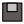
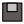

|
Guide d'annotation ResolCoMis à jour le 16 avril 2020 |
|
Guide d'annotation ResolCoMis à jour le 16 avril 2020 |
Ce guide s’inscrit dans un projet ANR : le projet É-clam. Ce projet vise à structurer et mettre à disposition de la communauté scientifique un vaste corpus d’écrits d’élèves et d’étudiants. En participant à la tâche d'annotation de ce corpus, vous contribuez à ce projet.
Ce guide décrit la tâche d'annotation des productions écrites issues de l'un des corpus du projet : le corpus Résolco ("Résolution de problèmes de cohésion textuelle"). Il s’agit d’un corpus composé de plusieurs centaines de textes d’élèves de niveaux scolaires différents répondant à une même consigne d'écriture. Cette consigne est la suivante :
Racontez une histoire dans laquelle vous insèrerez séparément et dans l’ordre donné les trois phrases suivantes :
Elle habitait dans cette maison depuis longtemps. (P1)
Il se retourna en entendant ce grand bruit. (P2)
Depuis cette aventure, les enfants ne sortent plus la nuit. (P3)
L'objectif de cette consigne est d'amener les élèves à résoudre plusieurs anaphores référentielles et donc à introduire, dans les interstices des trois phrases imposées, les référents des expressions référentielles de la consigne :
La tâche d'annotation que vous allez effectuer a pour objectif d'identifier les expressions référentielles donnant accès aux référents humains contenus dans les trois phrases de la consigne et de lister les moyens que les élèves utilisent pour construire les chaînes de référence, le cas échéant. La tâche vise donc l'annotation des expressions référentielles et co-référentielles qui concernent les trois référents humains de la consigne, à savoir Elle, Il, les enfants. Ces expressions constituent les maillons de 3 chaînes de références (CR) imposées par la consigne.
Dans les textes que vous allez annoter, certaines expressions linguistiques ont fait l'objet d'un prémarquage. Il s'agit d'expressions qui, parce qu'elles sont considérées comme référant potentiellement aux 3 référents humains, constituent des maillons-candidats des trois CR considérées.
L'annotation consiste ainsi à identifier les maillons des trois CR impliquant des référents humains imposées par la consigne en validant des maillons-candidats et en identifiant des maillons non prémarqués. Une fois tous les maillons délimités, une dernière étape de validation consiste à relier entre eux tous les maillons d'une même chaîne.
Une CR est constituée par l’ensemble des expressions référentielles qui renvoient à un même référent et que nous appelons des maillons.
Le texte suivant, produit par un élève de 3e en suivant la consigne ci-dessus, fournit une première illustration des notions de CR et de maillons.Dans ce texte, les maillons de la CR incluant le pronom Elle de la consigne et dont la première mention est l'expression référentielle une jeune fille du nom de Marie sont surlignés en jaune. Parmi ces maillons, on trouve les expressions référentielles suivantes :
Parmi les éléments surlignés, on trouve également :
Les déterminants possessifs surlignés sont ceux qui coréfèrent au possesseur Marie. Dans ce cas, on voit que l'on ne considère que le déterminant comme constitutif du maillon. Le verbe allait, coordonné avec avait, est surligné pour indiquer que son sujet est le même que celui du verbe avait (on parle dans ce cas de sujet zero).
Dans ce texte, la totalité des maillons de la CR référant à Elle a été annotée.
L'objectif de cette section est de décrire et d'illustrer la diversité des unités linguistiques susceptibles de constituer les maillons d'une CR. Les illustrations proposées sont issues de textes rédigés par des élèves. Chaque exemple est visualisé sous la forme d'une capture d'écran de l'interface glozz (dont l'utilisation pour l'annotation est décrite plus loin, section 3.1) et illustre un type particulier de maillon. Par conséquent, dans les exemples fournis seule l'annotation concernant le type de maillon illustré sera visible, et ce, y compris dans les cas où les exemples proposés contiennent d'autres type de maillons.
Les types de maillons décrits ci-dessous sont :
Ces maillons peuvent apparaître dans des contextes donnant lieu à des explications complémentaires :
Les syntagmes nominaux (SN) indéfinis, définis, démonstratifs (ex.: une fille, la fille, cette fille) sont annotés quand ils réfèrent à un des trois référents humains considérés.
Lorsque des modifieurs (antéposés ou postposés au nom ou au groupe nominal) sont présents, ils sont inclus dans la délimition du maillon. Ces modifieurs peuvent être :


Ajouter nos propres exemples du type "ma petite soeur Marie"
Ajouter nos propres exemples du type "Le président élu", "Le président élu par le peuple français avec 66,1 % des voix

Indiquer pê simplement que le modifieur puisse être séparé d'une virgule.
Les modifieurs des syntagmes nominaux peuvent se trouver en apposition. Pour identifier une apposition, on se fonde généralement sur la ponctuation, considèrant qu'il y a une apposition lorsqu'il y a une virgule. Cependant, dans la mesure où les textes à annoter sont des textes produits par des apprenants dans lesquels l'usage de la ponctuation n'est pas encore complètement stabilisé, la ponctuation n'est pas toujours assez fiable pour repérer les appositions.
Les appositions seront donc incluses dans la délimitation des maillons qu'elles soient signalées par une virgule (âgée de 15 ans) ou non (nommée Christine).


Théoriquement, les expressions qui sont employées en mention ne peuvent pas constituer les maillons d'une CR car elles ne référent pas, dans la mesure où le référent d'une expression utilisée en mention n'est autre que l'expression elle-même. Par conséquent, lorsqu'elles sont en mention, les expressions ne devraient pas être annotées. Cependant, et en particulier pour simplifier l'annotation, nous considèrerons ces expressions comme référentielles. Elles seront donc considérées comme des modifieurs du nom et feront partie intégrante du maillon. En d'autres termes, elles seront annotées de la même manière que les appositions. Ainsi, dans les deux exemples ci-dessus, on annotera :
Remarque(Mai) : la distinction mention me paraît effectivement inutile à ce stade. Par contre, les exemples précédents relèvent de cas de SN avec plusieurs modifieurs. Donc je mettrai la section "SN avec plusieurs modifieurs ici (et non plus haut comme dans la version précédente du guide). On peut alors reprendre les ex. en les décrivant pour que ce soit plus clair pour l'annotateur.
Du coup, que dirait-on pour "Une jeune fille, Marie, âgée de 15 ans" ?
SN avec adjectif, apposition nominale et participe passé ?
ou SN avec adjectif et 2 appositions ?
Dans le cas où il y a plusieurs modifieurs, ces derniers sont inclus dans la délimitation du maillon. Comme dans l'exemple précédent du maillon de type SN avec adjectif et proposition relative et comme dans l'exemple suivant.

Certaines copies contiennent des titres. Dans ces titres, peuvent figurer des maillons. Le cas échéant, une expression se trouvant dans un titre sera considérée comme référentielle et annotée comme maillon.
Ajouter nos propres exemples
Les expressions génériques référent et peuvent elles-aussi constituer les maillons d'une CR. Le syntagme nominal les enfants de la consigne est susceptible d'être interprété comme générique et renvoyer alors aux enfants en général ou comme spécifique et renvoyer dans ce cas aux enfants de l'histoire. Dans les deux cas, l'expression sera annotée comme un maillon de la CR.
Proposition(Mai) : Il serait peut être plus simple de distinguer l'annotation de "Elle / Il" et l'annotation de "les enfants". A ce stade, on est en train de lister les types de maillons sur la base de critères morpho-syntaxiques. Parler ici des génériques brouille les pistes. Autant le réserver pour le cas particulier de "les enfants".
Ajouter nos propres exemples
On fait comment s'il y a deux CR différentes pour les enfants ? ex.: copie CO-3e-2018-FSBJC6-D1-R13-V1_T_normalised.ac : il y a 'les enfants' de l'histoire de l'élève et 'les enfants' de l'histoire dans l'histoire.
Les déterminants possessifs coréfèrent au possesseur. Seul le déterminant est délimité comme maillon (son, sa).
Ajouter un autre cas de figure qu'on voit dans l'exemple suivant : Puis une voiture arrivait et s'arrêtait devant Tina et Hawk. La portière s'ouvre et c'était le père de Tina. pour montrer qu'on annote [de Tina] comme coréférent à Tina si Tina est un maillon de la chaîne elle
On annote les pronoms personnels et démonstratifs. Les pronoms réfléchis en revanche ne sont pas annotés.
Lorsque l'expression référentielle renvoyant à un nom humain prend la forme d'un nom propre (NPP), celui-ci peut se réaliser sous la forme d'un NPP complet, composé d'un nom et d'un prénom (Zack Ston), du prénom seul (Zack) ou uniquement du nom de famille (Ston).
Pour ce qui concerne l'annotation des NPP complets, le nom et le prénom constituent un même maillon
Dans le cas où deux ou plusieurs expressions référentielles sont coordonnées, on annotera non seulement chacune des expressions isolément mais aussi le groupe formé par ces expressions coordonnées.
On annote le groupe que si les deux deviennent 'les enfants' ? On pourrait prévoir la possibilité d'ajouter une unité 'groupe' comme on a fait avec Laura, pour signaler que 'elle' ou 'il' sont repris dans un groupe même si ce groupe ne correspond pas à 'les enfants' ? Et pour les syntagmes pris individuellement on les prend que si le référent est 'elle' 'il' ou 'les enfants' ? peut-être à expliciter ce qu'on fait si on a le cas ou un de deux noms n'est ni 'elle' ni 'il' ni 'les enfants' ?
Mai : oui, je pense que la solution de Silvia est la meilleure mais ce n'est pas là qu'il faut en parler. En l'état, s'il y a coordination, on n'annote que le SN qui réfère au référent en cours d'annotation. Si c'est le SN coordonné tout entier qui co-réfère (donc uniquement valable pour le référent "les enfants", on annote tout le SN coordonné.
Le maillon de type groupe est nécessaire pour les cas comme (j'ai mis les maillons et leur ref entre crochets):
Il était une fois [une petite fille qui]_elle s'appelaient Marie. [Elle]_elle habitait dans cette maison depuis longtemps. [Marie]_elle avait une copine qui s'appelait Jeanne. [Marie]_elle et Jeanne adoraient aller se promener. [Elles]_elle(groupe) aimaient surtout se cacher dans les bois. Une jour, [elles]_elle(groupe) ...
Où le référent "Marie" continue d'être actif mais systématiquement en coordination avec le référent "Jeanne". Ensuite, il se peut que l'annotation de "les enfants" fusionnent avec l'annotation "groupe_elle"

Dans le cas de la coordination de syntagmes, il arrive que le verbe soit au singulier, notamment avec la conjonction ou. Dans ce cas, on n'annote pas le groupe mais seulement les syntagmes pris séparémentment.
Ajouter nos propres exemples du type "Pierre ou Marie ira faire les courses"
Il est fréquent dans les cas de coordination verbale que le sujet ne soit pas répété pour chaque verbe mais uniquement instancié en sujet du premier verbe ("Elle est venue, a vu et a vaincu" vs. "Elle est venue, elle a vu et elle a vaincu"). Dans ces contextes, la seule façon d'annoter le sujet de tous les verbes est d'annoter le verbe lui-même.
Ajouter nos propres exemples"
Ajouter nos propres exemples"
Quelle délimitation de l'unité lorsqu'il y a un temps composé, une négation etc. ?
On considère que le passage au discours direct ne constitue pas une rupture de la chaîne. Ainsi on annote moi comme un maillon de la CR de Jeane, de même que chacune des occurrences du pronom personnel je qui suivent.

L'objectif de l'annotation que vous allez réaliser est double. Il s'agit :
L'annotation se déroulera en trois temps, un temps par CR. Pour chaque CR, l'identification et la délimitation des maillons consiste en la création d'unités dédiées. L'annotation aboutira ainsi à la création d'unité de type maillon_elle, maillon_il, maillon_lesEnfants (voir section 3.2.3).
Cette procédure d'annotation est assistée par un prémarquage automatique et associée à un modèle d'annotation permettant d'associer à chaque unité annotée un degré d'incertitude.
L'exemple ci-dessous fournit une illustration - pour le même texte que celui que nous avons commenté en introduction de ce guide - du résultat du prémarquage automatique d'unités appelées "maillons-candidats". Ces "maillons-candidats" correspondent à des éléments fortement susceptibles d'être des unités de type maillon_elle, maillon_il ou maillon_lesEnfants, à savoir :

Le prémarquage ayant été réalisé automatiquement, des erreurs de détection et de délimitation peuvent se présenter. Il est donc nécessaire de valider ce prémarquage en XXXX Il faut décider si le prémarquage fournit des unités de type maillon_elle, maillon_il, maillon_lesenfants, auquel cas, l'annotateur doit supprimer les annotations non pertinentes. Ou si le prémarquage fournit des unités de type maillon-candidat, auquel cas l'annotateur doit valider les annotations pertinentes en modifiant le type de l'unité en maillon_elle, maillon_il, maillon_lesEnfants.
Certains problèmes récurrents concernent le prémarquage des noms propres et des pronoms personnels.
Tous les NPP ont été considérés comme des maillons-candidats, même ceux ne pouvant désigner un humain, comme "Vendée" ou "22H" dans l'exemple ci-dessus. Ces maillons-candidats doivent donc être invalidés en supprimant l'annotation / ne pas être validés en laissant le prémarquage tel quel.
Par ailleurs, il se peut également que les noms propres soient prémarqués séparemment, comme le montre l'exemple ci-dessous.

Dans ce cas l'annotateur doit :
à décider
Tous les pronoms clitiques sujets il ont été prémarqués, qu'ils soient dans un emploi personnel (Il se retourna en entendant ce grand bruit) ou impersonnel (Il était un fois, Il pleut, Il est évident que...). Ces maillons-candidats doivent être invalidés en supprimant l'annotation / ne pas être validés en laissant le prémarquage tel quel.
Lors de l'annotation, en tant qu'annotateur vous pourrez être amenés à :
Pour vous vous permettre de décider si vous allez valider ou supprimer les maillons-candidats, nous vous suggérons de vous demander si les expressions préannotées sont effectivement coréférentielles ou non. Pour répondre à cette question, vous pouvez tenter de les substituer par l'expression référentielle complète. L'impossibilité d'une telle substitution amène à conclure à la non coréférentialité. mettre un exemple
Pour plusieurs raisons, il n'est pas toujours facile de déterminer quel est le référent d'une expression référentielle. Il peut notamment y avoir dans le contexte plusieurs expressions disponibles pour un même référent. C'est le cas ci-dessous où le possessif sa peut coréférer à la vieille femme ou à elle. Dans ce cas, on fera un choix et on annotera uniquement l'expression qui paraît la plus cohérente pour construire l'interprétation, en lui attribuant toutefois une étiquette signalant l'incertitude.
On utilise les traits associés à chaque unité et on indique une 'incertitude sur le rattachement'. Renvoyer à la section correspondante pour l'utilisation sous Glozz

L'annotation des CR se fait en délimitant et qualifiant toutes les UNITÉS ( ) qui correspondent aux expressions référentielles référant aux référents humains mentionnés dans les phrases consignes, à savoir elle, il et les enfants.
) qui correspondent aux expressions référentielles référant aux référents humains mentionnés dans les phrases consignes, à savoir elle, il et les enfants.
Afin de faciliter l'annotation, un certain nombre d'éléments ont été préannotés automatiquement. L'annotation consiste donc valider ou non ces maillons préannotés et à ajouter ceux que le système de prémarquage n'a pas pu détecter.
Trois types d'UNITÉS sont à distinguer :
Selon l'évolution du modèle, il peut y avoir 6 unités : elle, elle_groupe, il, il_groupe, les enfants et les enfants_groupes (plus rare)
Pour effectuer l'annotation vous allez utiliser l'interface d'annotation Glozz.
Pour télécharger le logiciel il faut se rendre sur le site suivant http://glozz.free.fr/ et remplir les champs proposés dans la section "Download Glozz".
Il faudra également suivre les indications pour demander une clé d'accès à Glozz, sans laquelle vous ne pourrez pas annoter.
Si vous avez des difficultés à trouver ces indications sur le site, suivez les informations ci-dessous :
Pour installer le logiciel suivez les indications présentes sur le site et sur le manuel : http://glozz.free.fr/glozzManual_1_0.pdf
Une fois l'installation terminée, vous pouvez lancer Glozz. Pour ce faire, vous avez plusieurs possibilités :
Pour que les modifications soient prises en compte il est nécessaire de re-importer le fichier que vous voulez annoter. Si vous ne l’avez pas importé, il suffit de le faire après avoir modifié les paramètres
Toutes les pocédures d'annotation se font avec l'interface d'annotation dans laquelle nous distinguons 7 éléménts :
Une fois l'interface ouverte, voici les procédures à effectuer pour charger les fichiers nécessaires à l'annotation :
Charger le document à annoter en cliquant sur le bouton  (Open corpus) situé dans la barre d'outils.
(Open corpus) situé dans la barre d'outils.
Deux éléments doivent être chargés :
ses annotations (fichier avec extension .aa comme annodis annotation), normalement situées dans le dossier /data/annotations.
Vous pouvez également charger un fichier contenant des annotations que vous avez réalisées et sauvegardées (voir la section 3.2.6.).
Bien entendu, les deux éléments doivent porter le même nom, hormis leur extension (e.g. avicenne_TEIP5.ac et avicenne_TEIP5.aa).
Charger la feuille de style qui permet de colorer dans le ruban et la
zone texte les indices prémarqués et les annotations associées au document.
Pour ce faire, cliquer sur le bouton  (Style editor) situé dans la barre d'outil, puis sur le bouton
(Style editor) situé dans la barre d'outil, puis sur le bouton  (Open style) dans la fenêtre concernée. Le fichier de base pour le marquage macro se trouve dans le fichier data/styles/macro.as
(Open style) dans la fenêtre concernée. Le fichier de base pour le marquage macro se trouve dans le fichier data/styles/macro.as
Charger le modèle d'annotation en cliquant sur le bouton  (LAM) dans la zone modèle (à droite de la zone texte). Pour l'annotation macro, charger le modèle data/annotationModels/macro.aam. Les différents éléments du modèle apparaissent alors dans la zone modèle.
(LAM) dans la zone modèle (à droite de la zone texte). Pour l'annotation macro, charger le modèle data/annotationModels/macro.aam. Les différents éléments du modèle apparaissent alors dans la zone modèle.

Tout maillon d'une des CR à annoter doit donner lieu à la création d'une unité.
Pour créer une unité, il faut d'abord sélectionner le type de l'unité à créer, à savoir maillon_elle, maillon_il ou maillon_les enfants. Par défaut, toute nouvelle unité est associée au type de l'unité précédemment annotée. Si aucune unité n'a encore été créée, la nouvelle unité sera associée au type u_default.
Pour associer un type à une nouvelle unité, sélectionnez le bouton  (Create a new simple Unit) et cliquez sur le type adéquat dans le modèle d'annotation affiché dans la zone LAM.
(Create a new simple Unit) et cliquez sur le type adéquat dans le modèle d'annotation affiché dans la zone LAM.
Passez ensuite à la délimitation de l'unité.

La délimitation des unités peut se faire de deux manières :
Si les délimitations n'apparaissent pas à l'écran cela signifie qu'aucun style n'est associé à l'unité. Vous devez alors vérifiez que l'objet que vous annotez (dont le nom est inscrit et sélectionné dans la zone modèle) a bien un style associé dans la fenêtre Style editor. Si vous ne voulez pas associer de style à l'objet en question mais uniquement le visualiser, choisissez alors d'afficher les annotations sans style (unstyled annotations) :
Barre d'outils :
Options > Préférences puis sur l'onglet Viewer :

Une fois cette unité créée, il faut renseigner certaines caractéristiques dans la zone modèle de l'interface et notamment le degré d'incertitude concernant sa délimitation et son rattachement. Par défaur ces valeurs sont nulle, ce qui signifie qu'il n'y a pas d'incertitude. Pour enregistrer les caractéristiques, il faut appuyer sur "entrée" une fois le champ rempli.
À tout moment il est possible modifier ou supprimer une annotation en choisissant le mode adéquat dans la zone édition.

sélectionnez l'unité à modifier en cliquant dessus. Les lignes délimitant l'unité se changent en pointillés rouges et deux petits ronds apparaissent aux bornes initiale et finale.
Lorsque le curseur de la souris passe sur une unité annotée, celle-ci change de couleur. En présence d'unités superposées, toutes les unités concernées changent de couleur. Pour sélectionner une unité lorsque les unités superposées ont les mêmes limites, il faut cliquer plusieurs fois pour sélectionner l'unité désirée.
changez l'annotation au niveau de la zone modèle (l'annotation actuelle apparaît surlignée)
 .
.
Si vous souhaitez supprimer une de vos précédentes annotations ou invalider un maillons=-candidat, il faut:
Les glue notes
À tout moment, il est possible d'associer un commentaire à une
annotation ou à n'importe quelle position dans le texte par le biais de glue note .
.
Pour cela, cliquer sur l'icône  et remplissez le cadre jaune qui s'affiche. Vous pouvez ensuite éditer
ces glue notes ou les supprimer, une par une ou toutes ensemble.
et remplissez le cadre jaune qui s'affiche. Vous pouvez ensuite éditer
ces glue notes ou les supprimer, une par une ou toutes ensemble.
Pour enregistrer vos annotations, cliquez sur le bouton  (Save Annotations).
Nommez le fichier d'annotation selon le format suivant :
NomTexte_NomAnnotateur_JJmoisAA.aa (ex : avicenne_hodac_01janvier09.aa)
(Save Annotations).
Nommez le fichier d'annotation selon le format suivant :
NomTexte_NomAnnotateur_JJmoisAA.aa (ex : avicenne_hodac_01janvier09.aa)
Vous pouvez décider de masquer vos annotations précédentes en masquant le style concerné ou en masquant au cas par cas les annotations via l'outil d'exploration 'Annotation as text' (voir explication ici)
Vous pouvez, à tout moment et selon votre convenance, modifier le jeu de couleur ou choisir de ne pas colorer tel ou tel type d'indice. Pour ce faire, ouvrez le style ecalm.as et cliquez sur l'indice dont la couleur est à modifier, ou cochez la case Hide pour ne plus voir son surlignement.
ATTENTION!! Il se peut que plusieurs fenêtres Style Editor soient ouvertes simultanément (si vous avez à chaque fois cliqué sur le bouton  ). Du coup, vos modifications peuvent ne pas prendre effet. Pour être sûr de modifier le 'bon' jeu de style, vérifiez dans la barre des tâches qu'un seul
). Du coup, vos modifications peuvent ne pas prendre effet. Pour être sûr de modifier le 'bon' jeu de style, vérifiez dans la barre des tâches qu'un seul  apparaît. Si plusieurs fenêtres sont ouvertes, fermez les toutes pour n'en laisser qu'une sur laquelle vous ferez vos modifications (que vous pourrez sauvegarder en cliquant, dans la fenêtre Style Editor, sur le bouton ).
apparaît. Si plusieurs fenêtres sont ouvertes, fermez les toutes pour n'en laisser qu'une sur laquelle vous ferez vos modifications (que vous pourrez sauvegarder en cliquant, dans la fenêtre Style Editor, sur le bouton ).
Auteurs : Silvia Federzoni, Josette Rebeyrolle, Lydia-Mai Ho-Dac (version : 1 avril 2020)
|
Ce guide est disponible sous licence
Creative Commons By-NC-SA 3.0
(Patternité, usage non commercial, partage à l'identique). Merci de la lire attentivement. |
 |
Il peut s'avérer rapidement difficile de distinguer les différents niveaux de structuration. Pour cela, l'interface propose un outil appelé Depth Selector qui permet de jouer sur les niveaux d'annotation visibles. Pour activer cette fonction, cliquez dans la barre d'outils sur Tools puis Depth Selector. La boîte de dialogue suivante apparaît alors dans la zone droite de l'interface : .
.
Il suffit ensuite de manipuler le curseur pour faire varier l'affichage des différents niveaux d'annotation.